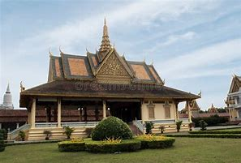
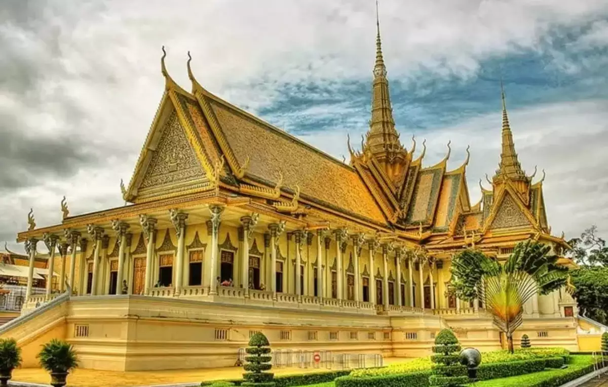
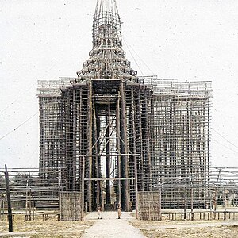
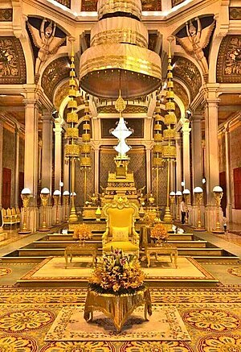

Welcome to Royal Palace of Cambodias Click here

1.Introduction
The Royal Palace of Cambodia (Khmer: ព្រះបរមរាជវាំង) is a complex of buildings which serves as the official royal residence of the King of Cambodia. Its full name in Khmer is the Preah Barom Reacheaveang Chaktomuk Serey Mongkol (Khmer: ព្រះបរមរាជវាំងចតុមុខសិរីមង្គល). The Cambodian monarchs have occupied it since it was built in the 1860s, with a period of absence when the country came into turmoil during and after the reign of the Khmer Rouge. The palace was constructed by King Norodom between 1866 and 1870; this original palace was largely demolished and rebuilt between 1912 and 1932, It is situated at the Western bank of the confluence of the Tonle Sap River and the Mekong River called Chaktomuk (an allusion to Brahma).
2.About
| History | Building | Architecture/area |
|---|
-
History
The establishment of the Royal Palace in Phnom Penh in 1866 is a comparatively recent event in the history of the Khmer and Cambodia. The seat of Khmer power in the region rested in or near Angkor north of the Great Tonle Sap Lake from 802 AD until the early 15th century. After the Khmer court moved from Angkor in the 15th century due to environmental problems and ecological imbalance, it first settled in Phnom Penh which back then named as Krong Chaktomuk Serei Mongkol (Khmer: ក្រុងចតុមុខសិរីមង្គល) in 1434 (or 1446) and stayed for some decades, but by 1494 had moved on to Basan, and later Longvek and then Oudong. The capital did not return to Phnom Penh until the 19th century and there is no record or remnants of any Royal Palace in Phnom Penh prior to the 19th century. In 1813, King Ang Chan (1796–1834) constructed Banteay Kev (the 'Crystal Citadel') on the site where the current Royal Palace stands . After Ang Chan, the capital was at Oudong, about 40 kilometers to the northwest, until in 1866 his nephew, King Norodom, returned to Phnom Penh. Norodom lived first in a temporary wooden Palace a bit north of Wat Ounalom, while the permanent palace was being constructed. Norodom's palace was a compound containing many separate buildings, of which the most significant were the throne hall, the king's private villas (there were two of these, one on the north side of the throne hall and one on the south), the set of traditional salas, or open-sided pavilions, known as the Salle de Danse and Salle des Fetes (hall of dances and banquet hall), and the Napoleon Pavilion. These were all in the eastern, or public, courtyard. The western courtyard was for the king's women, which the French called his harem, and although this is not exactly accurate the only adult male allowed to enter was the king himself. The whole complex was surrounded by a wall (originally a wall to the east and a moat to the west, but the moat was filled in some time after 1914) topped by decorative leaf shapes called seima; these same symbols are seen on the walls surrounding monasteries, and, as with monasteries, were used to symbolize that what lay within is holy. In addition, just outside the palace but part of it, were the Silver Pagoda to the south and the cremation ground to the north, while the park on the eastern side used for royal festivals such as the King's Birthday and the annual boat races. King Norodom's palace was demolished and rebuilt by his successor, his half-brother King Sisowath, between 1912 and 1919, and today the only sizeable remains are the eastern section of the wall and the Napoleon Pavilion. The main elements of the public eastern courtyard of the modern palace are:
  -
Buildings of the Royal Palace
 The complex is divided by walls into four main compounds. On the south side is the Silver Pagoda, to the north side is the Khemarin Palace and the central compound contains the Throne Hall and to the west is the private sector or the Inner Court. The buildings of the palace were built gradually over time, and some were dismantled and rebuilt as late as the 1960s. Some older buildings date back to the 19th century.
-
Architecture and area
The Royal Palace of Cambodia is a good example of Khmer architecture featuring its layout of the defensive wall (kampeng), throne hall (preah thineang), Temple of the Emerald Buddha (Wat Preah Keo Morakot), stupas (chedei), towering spires (prang prasat) and mural paintings. The Royal Palace of Phnom Penh covers an area of 174,870 square metres (1,882,300 sq ft) (402m x 435m).
